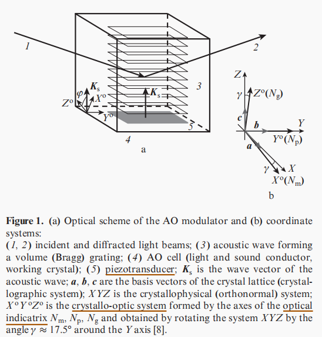
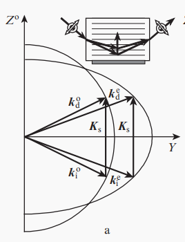
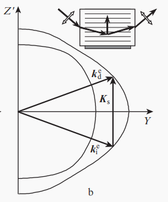
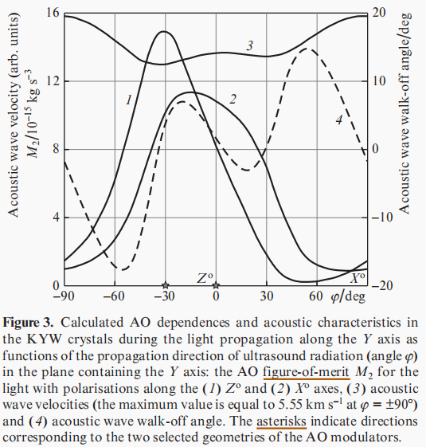
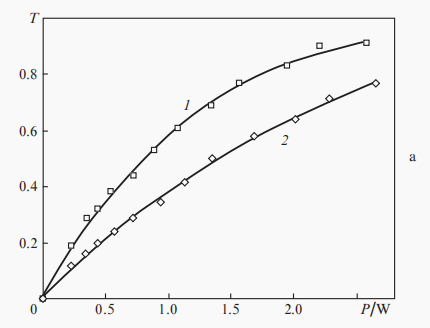
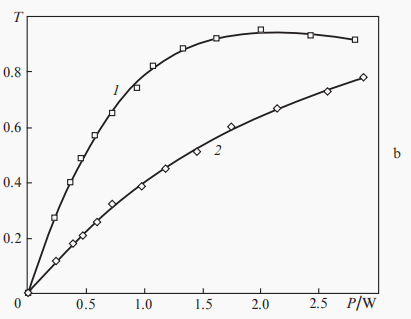
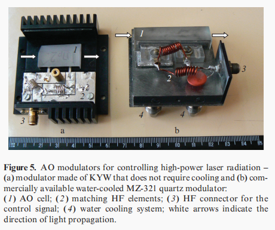
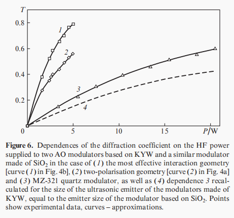

<!DOCTYPE html>
<html>
<head>
  <meta charset="utf-8">
  
  <title>laser modulation | Hexo</title>
  <meta name="viewport" content="width=device-width, initial-scale=1, maximum-scale=1">
  
    <meta name="keywords" content="Whoknow,zzyyqq1's Blog" />
  
  <meta name="description" content="opinion of laser modulation technique opinion about the article: http:&#x2F;&#x2F;dx.doi.org&#x2F;10.1070&#x2F;QEL16297  about the articleintroductionfirst to introduce the advantages of AO modulator:small switching time">
<meta property="og:type" content="article">
<meta property="og:title" content="laser modulation">
<meta property="og:url" content="http://example.com/2021/10/29/laser-modulation/index.html">
<meta property="og:site_name" content="Hexo">
<meta property="og:description" content="opinion of laser modulation technique opinion about the article: http:&#x2F;&#x2F;dx.doi.org&#x2F;10.1070&#x2F;QEL16297  about the articleintroductionfirst to introduce the advantages of AO modulator:small switching time">
<meta property="og:locale" content="en_US">
<meta property="og:image" content="http://example.com/2021/10/29/laser-modulation/figure1.png">
<meta property="og:image" content="http://example.com/2021/10/29/laser-modulation/figure2a.png">
<meta property="og:image" content="http://example.com/2021/10/29/laser-modulation/figure2b.png">
<meta property="og:image" content="http://example.com/2021/10/29/laser-modulation/figure3.png">
<meta property="og:image" content="http://example.com/2021/10/29/laser-modulation/figure4a.png">
<meta property="og:image" content="http://example.com/2021/10/29/laser-modulation/figure4b.png">
<meta property="og:image" content="http://example.com/2021/10/29/laser-modulation/figure4a.png">
<meta property="og:image" content="http://example.com/2021/10/29/laser-modulation/figure5.png">
<meta property="og:image" content="http://example.com/2021/10/29/laser-modulation/figure4a.png">
<meta property="og:image" content="http://example.com/2021/10/29/laser-modulation/figure6.png">
<meta property="article:published_time" content="2021-10-29T02:06:07.000Z">
<meta property="article:modified_time" content="2021-10-29T12:33:50.563Z">
<meta property="article:author" content="John Doe">
<meta property="article:tag" content="idea">
<meta name="twitter:card" content="summary">
<meta name="twitter:image" content="http://example.com/2021/10/29/laser-modulation/figure1.png">
  
  
    <link rel="icon" href="/logo.ico">
  
  <link href="//cdn.bootcss.com/font-awesome/4.7.0/css/font-awesome.min.css" rel="stylesheet" type="text/css">
  
<link rel="stylesheet" href="/css/style.css">

  
<script src="/js/pace.min.js"></script>

  

  
  

<meta name="generator" content="Hexo 5.4.0"></head>

<body>
  <div id="container">
      <header id="header">
    <div id="banner"></div>
    <div id="header-outer">
        <div id="header-menu" class="header-menu-pos animated">
            <div class="header-menu-container">
                <a href="/" class="left">
                    <span class="site-title">zzyyqq1&#39;s Blog</span>
                </a>
                <nav id="header-menu-nav" class="right">
                    
                    <a  href="/">
                        <i class="fa fa-home"></i>
                        <span>Home</span>
                    </a>
                    
                    <a  href="/archives">
                        <i class="fa fa-archive"></i>
                        <span>Archives</span>
                    </a>
                    
                    <a  href="/about">
                        <i class="fa fa-user"></i>
                        <span>About</span>
                    </a>
                    
                </nav>
                <a class="mobile-header-menu-button">
                    <i class="fa fa-bars"></i>
                </a>
            </div>
        </div>
        <div id="header-row">
            <div id="logo">
                <a href="/">
                    
                </a>
            </div>
            <div class="header-info">
                <div id="header-title">
                    
                    <h2>
                        zzyyqq1&#39;s Blog
                    </h2>
                    
                </div>
                <div id="header-description">
                    
                    <h3>
                        专注于搞事情
                    </h3>
                    
                </div>
            </div>
            <nav class="header-nav">
                <div class="social">
                    
                        <a title="zzyyqq1" target="_blank" href="//zzyyqq1.top">
                            <i class="fa fa-home fa-2x"></i></a>
                    
                        <a title="Github" target="_blank" href="//github.com/zzyyqq2000">
                            <i class="fa fa-github fa-2x"></i></a>
                    
                        <a title="zhihu" target="_blank" href="//zhihu.com/people/wang-shi-yue-qian-nian-2000">
                            <i class="fa fa-zhihu fa-2x"></i></a>
                    
                </div>
            </nav>
        </div>
    </div>
</header>
      <div class="outer">
        <section id="main" class="body-wrap"><article id="post-laser-modulation" class="article article-type-post" itemscope itemprop="blogPost">
  <div class="article-inner">
    
      <header class="article-header">
        
  
    <h1 class="post-title" itemprop="name">
      laser modulation
    </h1>
    <div class="post-title-bar">
      <ul>
          
        <li>
          <i class="fa fa-calendar"></i>  2021-10-29
        </li>
        <li>
          <i class="fa fa-eye"></i>
          <span id="busuanzi_value_page_pv"></span>
        </li>
      </ul>
    </div>
  

          
      </header>
    
    <div class="article-entry post-content" itemprop="articleBody">
      
            
            <h1 id="opinion-of-laser-modulation-technique"><a href="#opinion-of-laser-modulation-technique" class="headerlink" title="opinion of laser modulation technique"></a>opinion of laser modulation technique</h1><blockquote>
<p>opinion about the article: <a target="_blank" rel="noopener" href="http://dx.doi.org/10.1070/QEL16297">http://dx.doi.org/10.1070/QEL16297</a></p>
</blockquote>
<h2 id="about-the-article"><a href="#about-the-article" class="headerlink" title="about the article"></a>about the article</h2><h3 id="introduction"><a href="#introduction" class="headerlink" title="introduction"></a>introduction</h3><h4 id="first-to-introduce-the-advantages-of-AO-modulator"><a href="#first-to-introduce-the-advantages-of-AO-modulator" class="headerlink" title="first to introduce the advantages of AO modulator:"></a>first to introduce the advantages of AO modulator:</h4><p>small switching times,simplicity,ease of use, relatively low cost,great variety of modifications,optimisation for specific task, required wavelength,wide operating spectrum range</p>
<h4 id="next-to-say-the-limit"><a href="#next-to-say-the-limit" class="headerlink" title="next to say the limit:"></a>next to say the limit:</h4><p>have to have the high radiation resistance, only leave quartz to choose, but quartz is not of high AO quality. So have to use high-frequency (HF) control signal of high power (up to 100 W), and lead to the need for water-cooling, which is complicated.</p>
<h4 id="Then-say-what-to-do"><a href="#Then-say-what-to-do" class="headerlink" title="Then say what to do:"></a>Then say what to do:</h4><p>need to develop a modulator with high radiation resistance without water cooling system</p>
<h4 id="last-talk-about-KYW-and-introduce-the-following-context"><a href="#last-talk-about-KYW-and-introduce-the-following-context" class="headerlink" title="last talk about KYW and introduce the following context"></a>last talk about KYW and introduce the following context</h4><p>high radiation resistance,transparency for light in a wide spectral range (0.4–5 mm) good to control high power radiation, more efficient, next to compare</p>
<h3 id="Structure-and-features-of-AO-modulators-made-of-KYW"><a href="#Structure-and-features-of-AO-modulators-made-of-KYW" class="headerlink" title="Structure and features of AO modulators made of KYW"></a>Structure and features of AO modulators made of KYW</h3><p>introduce the mutual orientation of the axes of the coordinate systems of KYW</p>
<p></p>
<p>two geometries:</p>
<h4 id="two-polarisation"><a href="#two-polarisation" class="headerlink" title="two polarisation"></a>two polarisation</h4><ul>
<li>light direction: close to the second-order symmetry axis Y of the crystal</li>
<li>wave direction: in the direction of the Z^0^ axis(($\phi = 0°$))</li>
<li>ensure close and sufficiently large M2 values for light of both polarisations</li>
</ul>
<p></p>
<h4 id="most-effecient-the-greatest-value-of-the-AO-figure-of-merit-M2"><a href="#most-effecient-the-greatest-value-of-the-AO-figure-of-merit-M2" class="headerlink" title="most effecient(the greatest value of the AO figure-of-merit M2)"></a>most effecient(the greatest value of the AO figure-of-merit M<del>2</del>)</h4><ul>
<li>propagation in the plane Z’Y, which is obtainedby the rotation of the plane Z^0^Y by the angle of –30°($\phi = -30°$) around the Y axis and light should be polarised along the Z^0^ axis</li>
<li>piezotransducer is applied are orientednormally to the optical axes</li>
</ul>
<p></p>
<h4 id="other-properties"><a href="#other-properties" class="headerlink" title="other properties"></a>other properties</h4><p>the acoustic wave walk-off angle is small: 3.4° and 1.6°velocities of acoustic waves at j = –30° and 0 are equal to 4.56´105 and 4.79´105 cm s–1</p>
<p></p>
<h3 id="Investigating-the-characteristics-of-modulators"><a href="#Investigating-the-characteristics-of-modulators" class="headerlink" title="Investigating the characteristics of modulators"></a>Investigating the characteristics of modulators</h3><h4 id="first-stage"><a href="#first-stage" class="headerlink" title="first stage"></a>first stage</h4><p>use 632.8-nm helium–neon laser with circular polarisation<br>diffraction coefficient T:     $ T = sin^2 [(\pi /2) \sqrt{P/P_0 }]$<br>diffraction efficiency of AO modulators: $ \omega = T / P|_{T&lt;&lt;1} = \pi^2 /4 P_0 $</p>
<p>   </p>
<h4 id="second-stage"><a href="#second-stage" class="headerlink" title="second stage"></a>second stage</h4><p>using the same optical scheme with the aim of comparison with the existing analogues<br>measure diffraction efficiency of the commercially available MZ-321<br>compare it with new KYW modulator</p>
<p>KYW exceed much (3.7 and 6.6 times) but the result may not be fully correct for the MZ-321 has much longer AO interaction length and makes the estimate obtained not completely correct and the ultrasonic converters are different</p>
<p>   </p>
<p>when all condition same:<br>exceed 5.1 and 9.2 times, same with calculation</p>
<p>   </p>
<p>compare with paratellurite (TeO2):<br>thought efficiency is smaller for 2-3 times but the radiation strength of TeO2 is much lower<br>breaking pulse threshold for paratellurite: 0.3 GW cm^–2^ at wavelength of 1 mm<br>breaking pulse threshold for KGd(WO4)2: 50GW cm^–2^ (KGW)<br>breaking pulse threshold for KYW: 0.8GW cm^–2^<br>for high power laser, KYW is better(though not very much)</p>
<h3 id="Conclusions"><a href="#Conclusions" class="headerlink" title="Conclusions"></a>Conclusions</h3><p>experiment and calculation confirm:</p>
<ul>
<li><p>exceeds the efficiency of a typical AO quartz modulator by approximately 10 times</p>
</li>
<li><p>modulators made of KYW provide approximately equal diffraction efficiencies for both polarisationcomponents of the light beam, which allows nonpolarisedradiation to be modulated without significant losses.(five times.)</p>
</li>
<li><p>do not require water cooling,</p>
</li>
</ul>
<h2 id="about-what-i-learn"><a href="#about-what-i-learn" class="headerlink" title="about what i learn"></a>about what i learn</h2><p>laser modulation can be categroied as follow:</p>
<figure class="highlight plain"><table><tr><td class="gutter"><pre><span class="line">1</span><br><span class="line">2</span><br><span class="line">3</span><br><span class="line">4</span><br><span class="line">5</span><br><span class="line">6</span><br><span class="line">7</span><br><span class="line">8</span><br><span class="line">9</span><br><span class="line">10</span><br><span class="line">11</span><br><span class="line">12</span><br></pre></td><td class="code"><pre><span class="line">modulation</span><br><span class="line">|---- by position</span><br><span class="line">|          |---- internal modulation</span><br><span class="line">|          |---- external modulation</span><br><span class="line">|---- by feature </span><br><span class="line">|          |---- laser as wave</span><br><span class="line">|                  |---- amplitude modulation</span><br><span class="line">|                  |---- phase modulation</span><br><span class="line">|                  |---- frequency modulation</span><br><span class="line">|          |---- laser as pulse</span><br><span class="line">|                  |---- pulse modualtion</span><br><span class="line">|                  |---- pulse coded modulation(digital modulation)</span><br></pre></td></tr></table></figure>

            <div class="post-copyright">
    <div class="content">
        <p>最后更新： 2021年10月29日 20:33</p>
        <p>原始链接： <a class="post-url" href="/2021/10/29/laser-modulation/" title="laser modulation">http://example.com/2021/10/29/laser-modulation/</a></p>
        <footer>
            <a href="http://example.com">
                
                John Doe
            </a>
        </footer>
    </div>
</div>

      
        
            
<div class="page-reward">
    <a id="rewardBtn" href="javascript:;">赏</a>
</div>

<div id="reward" class="post-modal reward-lay">
    <a class="close" href="javascript:;" id="reward-close">×</a>
    <span class="reward-title">
        <i class="icon icon-quote-left"></i>
        请我吃糖~
        <i class="icon icon-quote-right"></i>
    </span>
    <div class="reward-content">
        
        <div class="reward-code">
            
        </div>
        <div class="reward-select">
            
            <label class="reward-select-item checked" data-id="wechat" data-wechat="/images/wechat_code.jpg">
                
            </label>
            
            
            <label class="reward-select-item" data-id="alipay" data-alipay="/images/alipay_code.jpg">
                
            </label>
            
        </div>
    </div>
</div>


        
    </div>
    <footer class="article-footer">
        
        
<div class="post-share">
    <a href="javascript:;" id="share-sub" class="post-share-fab">
        <i class="fa fa-share-alt"></i>
    </a>
    <div class="post-share-list" id="share-list">
        <ul class="share-icons">
          <li>
            <a class="weibo share-sns" target="_blank" href="http://service.weibo.com/share/share.php?url=http://example.com/2021/10/29/laser-modulation/&title=《laser modulation》 — Hexo&pic=/laser-modulation/figure1.png" data-title="微博">
              <i class="fa fa-weibo"></i>
            </a>
          </li>
          <li>
            <a class="weixin share-sns" id="wxFab" href="javascript:;" data-title="微信">
              <i class="fa fa-weixin"></i>
            </a>
          </li>
          <li>
            <a class="qq share-sns" target="_blank" href="http://connect.qq.com/widget/shareqq/index.html?url=http://example.com/2021/10/29/laser-modulation/&title=《laser modulation》 — Hexo&source=" data-title="QQ">
              <i class="fa fa-qq"></i>
            </a>
          </li>
          <li>
            <a class="facebook share-sns" target="_blank" href="https://www.facebook.com/sharer/sharer.php?u=http://example.com/2021/10/29/laser-modulation/" data-title="Facebook">
              <i class="fa fa-facebook"></i>
            </a>
          </li>
          <li>
            <a class="twitter share-sns" target="_blank" href="https://twitter.com/intent/tweet?text=《laser modulation》 — Hexo&url=http://example.com/2021/10/29/laser-modulation/&via=http://example.com" data-title="Twitter">
              <i class="fa fa-twitter"></i>
            </a>
          </li>
          <li>
            <a class="google share-sns" target="_blank" href="https://plus.google.com/share?url=http://example.com/2021/10/29/laser-modulation/" data-title="Google+">
              <i class="fa fa-google-plus"></i>
            </a>
          </li>
        </ul>
     </div>
</div>
<div class="post-modal wx-share" id="wxShare">
    <a class="close" href="javascript:;" id="wxShare-close">×</a>
    <p>扫一扫，分享到微信</p>
    
</div>

<div class="mask"></div>

        
        <ul class="article-footer-menu">
            
            
  <li class="article-footer-tags">
    <i class="fa fa-tags"></i>
      
    <a href="/tags/idea/" class="color5">idea</a>
      
  </li>

        </ul>
        
    </footer>
  </div>
</article>


    <aside class="post-toc-pos post-toc-top" id="post-toc">
        <nav class="post-toc-wrap">
            <ol class="post-toc"><li class="post-toc-item post-toc-level-1"><a class="post-toc-link" href="#opinion-of-laser-modulation-technique"><span class="post-toc-text">opinion of laser modulation technique</span></a><ol class="post-toc-child"><li class="post-toc-item post-toc-level-2"><a class="post-toc-link" href="#about-the-article"><span class="post-toc-text">about the article</span></a><ol class="post-toc-child"><li class="post-toc-item post-toc-level-3"><a class="post-toc-link" href="#introduction"><span class="post-toc-text">introduction</span></a><ol class="post-toc-child"><li class="post-toc-item post-toc-level-4"><a class="post-toc-link" href="#first-to-introduce-the-advantages-of-AO-modulator"><span class="post-toc-text">first to introduce the advantages of AO modulator:</span></a></li><li class="post-toc-item post-toc-level-4"><a class="post-toc-link" href="#next-to-say-the-limit"><span class="post-toc-text">next to say the limit:</span></a></li><li class="post-toc-item post-toc-level-4"><a class="post-toc-link" href="#Then-say-what-to-do"><span class="post-toc-text">Then say what to do:</span></a></li><li class="post-toc-item post-toc-level-4"><a class="post-toc-link" href="#last-talk-about-KYW-and-introduce-the-following-context"><span class="post-toc-text">last talk about KYW and introduce the following context</span></a></li></ol></li><li class="post-toc-item post-toc-level-3"><a class="post-toc-link" href="#Structure-and-features-of-AO-modulators-made-of-KYW"><span class="post-toc-text">Structure and features of AO modulators made of KYW</span></a><ol class="post-toc-child"><li class="post-toc-item post-toc-level-4"><a class="post-toc-link" href="#two-polarisation"><span class="post-toc-text">two polarisation</span></a></li><li class="post-toc-item post-toc-level-4"><a class="post-toc-link" href="#most-effecient-the-greatest-value-of-the-AO-figure-of-merit-M2"><span class="post-toc-text">most effecient(the greatest value of the AO figure-of-merit M2)</span></a></li><li class="post-toc-item post-toc-level-4"><a class="post-toc-link" href="#other-properties"><span class="post-toc-text">other properties</span></a></li></ol></li><li class="post-toc-item post-toc-level-3"><a class="post-toc-link" href="#Investigating-the-characteristics-of-modulators"><span class="post-toc-text">Investigating the characteristics of modulators</span></a><ol class="post-toc-child"><li class="post-toc-item post-toc-level-4"><a class="post-toc-link" href="#first-stage"><span class="post-toc-text">first stage</span></a></li><li class="post-toc-item post-toc-level-4"><a class="post-toc-link" href="#second-stage"><span class="post-toc-text">second stage</span></a></li></ol></li><li class="post-toc-item post-toc-level-3"><a class="post-toc-link" href="#Conclusions"><span class="post-toc-text">Conclusions</span></a></li></ol></li><li class="post-toc-item post-toc-level-2"><a class="post-toc-link" href="#about-what-i-learn"><span class="post-toc-text">about what i learn</span></a></li></ol></li></ol>
        </nav>
    </aside>
    

<nav id="article-nav">
  
    <a href="/2021/10/29/%E8%B8%A9%E5%9D%91%E8%AE%B0%E5%BD%95/" id="article-nav-newer" class="article-nav-link-wrap">

      <span class="article-nav-title">
        <i class="fa fa-hand-o-left" aria-hidden="true"></i>
        
          踩坑记录
        
      </span>
    </a>
  
  
    <a href="/2021/10/29/%E6%BF%80%E5%85%89%E8%B0%83%E5%88%B6%E5%99%A8/" id="article-nav-older" class="article-nav-link-wrap">
      <span class="article-nav-title">激光调制器</span>
      <i class="fa fa-hand-o-right" aria-hidden="true"></i>
    </a>
  
</nav>


    
</section>
        
      </div>
      <footer id="footer">
  <div class="outer">
    <div id="footer-info" class="inner">
      
<p>
    <span id="busuanzi_container_site_uv" style='display:none'>
        总访客数：<span id="busuanzi_value_site_uv"></span>
    </span>
    <span id="busuanzi_container_site_pv" style='display:none'>
        总访问量：<span id="busuanzi_value_site_pv"></span>
    </span>
</p>


      <p>
        Powered by  <a href="http://hexo.io/" target="_blank">Hexo</a>
        Theme <a href="//github.com/wongminho/hexo-theme-miho" target="_blank">MiHo</a>
      &copy; 2021 John Doe<br>
      </p>
    </div>
  </div>
</footer>
    <script async src="//busuanzi.ibruce.info/busuanzi/2.3/busuanzi.pure.mini.js"></script>
<script src="//cdn.bootcss.com/jquery/3.2.1/jquery.min.js"></script>
<script>
  var mihoConfig = {
      root: "http://example.com",
      animate: true,
      isHome: false,
      share: true,
      reward: 1
  }
</script>
<div class="sidebar">
    <div id="sidebar-search" title="Search">
        <i class="fa fa-search"></i>
    </div>
    <div id="sidebar-category" title="Categories">
        <i class="fa fa-book"></i>
    </div>
    <div id="sidebar-tag" title="Tags">
        <i class="fa fa-tags"></i>
    </div>
    <div id="sidebar-top">
        <span class="sidebar-top-icon"><i class="fa fa-angle-up"></i></span>
    </div>
</div>
<div class="sidebar-menu-box" id="sidebar-menu-box">
    <div class="sidebar-menu-box-container">
        <div id="sidebar-menu-box-categories">
            
        </div>
        <div id="sidebar-menu-box-tags">
            <a href="/tags/idea/" style="font-size: 20px;">idea</a> <a href="/tags/%E7%AC%94%E8%AE%B0/" style="font-size: 20px;">笔记</a> <a href="/tags/%E8%AE%BA%E6%96%87%E7%BF%BB%E8%AF%91/" style="font-size: 10px;">论文翻译</a> <a href="/tags/%E8%B8%A9%E5%9D%91/" style="font-size: 10px;">踩坑</a>
        </div>
    </div>
    <a href="javascript:;" class="sidebar-menu-box-close">&times;</a>
</div>
<div class="mobile-header-menu-nav" id="mobile-header-menu-nav">
    <div class="mobile-header-menu-container">
        <span class="title">Menus</span>
        <ul class="mobile-header-menu-navbar">
            
            <li>
                <a  href="/">
                    <i class="fa fa-home"></i><span>Home</span>
                </a>
            </li>
            
            <li>
                <a  href="/archives">
                    <i class="fa fa-archive"></i><span>Archives</span>
                </a>
            </li>
            
            <li>
                <a  href="/about">
                    <i class="fa fa-user"></i><span>About</span>
                </a>
            </li>
            
        </ul>
    </div>
    <div class="mobile-header-tag-container">
        <span class="title">Tags</span>
        <div id="mobile-header-container-tags">
            <a href="/tags/idea/" style="font-size: 20px;">idea</a> <a href="/tags/%E7%AC%94%E8%AE%B0/" style="font-size: 20px;">笔记</a> <a href="/tags/%E8%AE%BA%E6%96%87%E7%BF%BB%E8%AF%91/" style="font-size: 10px;">论文翻译</a> <a href="/tags/%E8%B8%A9%E5%9D%91/" style="font-size: 10px;">踩坑</a>
        </div>
    </div>
</div>
<div class="search-wrap">
    <span class="search-close">&times;</span>
        <a href="javascript:;" class="header-icon waves-effect waves-circle waves-light" id="back">
            <i class="icon icon-lg icon-chevron-left"></i>
        </a>
        <input class="search-field" placeholder="Search..." id="keywords">
        <a id="search-submit" href="javascript:;">
            <i class="fa fa-search"></i>
        </a>
    <div class="search-container" id="search-container">
        <ul class="search-result" id="search-result">
        </ul>
    </div>
</div>

<div id="search-tpl">
    <li class="search-result-item">
        <a href="{url}" class="search-item-li">
            <span class="search-item-li-title" title="{title}">{title}</span>
        </a>
    </li>
</div>

<script src="/js/search.js"></script>


<script src="/js/main.js"></script>


  <script src="//cdn.bootcss.com/particles.js/2.0.0/particles.min.js"></script>
  <div id="particles"></div>
  
<script src="/js/particles.js"></script>


  
<link rel="stylesheet" href="//cdn.bootcss.com/animate.css/3.5.0/animate.min.css">

  <script src="//cdn.bootcss.com/scrollReveal.js/3.0.5/scrollreveal.js"></script>
  
<script src="/js/animate.js"></script>


  
<script src="/js/pop-img.js"></script>

  <script>
     $(".article-entry p img").popImg();
  </script>

  </div>
</body>
</html>